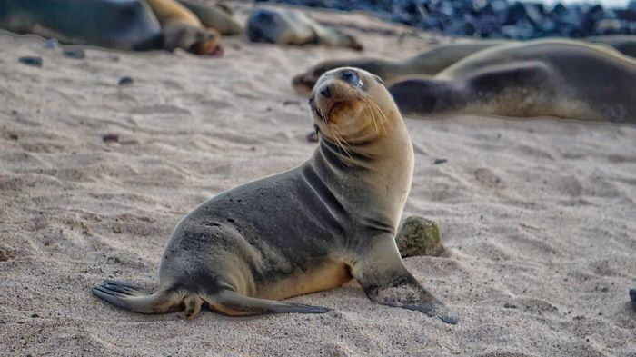

ზღვის ლომები
ზღვის ლომი — ყურებიანი სელაპების ოჯახის 5 სახეობის ზოგადი სახელწოდება და ქვეოჯახი.
სქესმწიფე მამლის სიგრძე 2-3,6 მ აღწევს, წონა 200-1250 კგ-მდე, დედლისა — 1,8-2,8 მ, 90-400 კგ.
სხეული დაფარული აქვთ თითქმის ერთფეროვანი (ღია რუხიდან ყავისფრამდე) ბალნით. ხუთივე სახეობა სხვადასხვა
გვარს ეკუთვნის. გავრცელებული არიან ჩრდილოეთ ნახევარსფეროში — კალიფორნიიდან მექსიკამდე, გალაპაგოსის
კუნძულებთან და იაპონიის ზღვაში, აგრეთვე სამხრეთ ნახევარსფეროში.
ყველა ზღვის ლომი პოლიგამიური
ცხოველია. ცხოვრობენ ჯოგებად. ზაფხულ-შემოდგომაზე გროვდებიან თავშესაყარ ადგილებში (კუნძულებზე),
სადაც მრავლდებიან, კვებავენ ნაშიერს, იქვე მოითავებენ განგურს.
დანარჩენ დროს ზღვაში ატარებენ.
ზღვის ლომის რეწვის ძირითადი პროდუქტებია კანქვეშა ცხიმი და ტყავი. კალიფორნიულ ზღვის ლომს
(Zalophus celifornianus) ხშირად ცირკისათვის წვრთნიან.

lomi